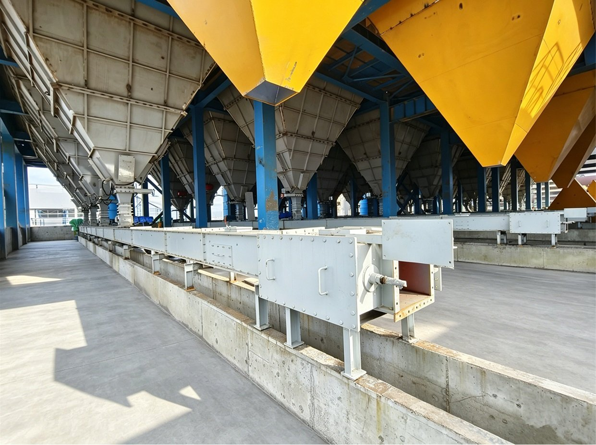

Глинозёмный завод — это не одна транспортная задача, а три. Мелкодисперсный глинозём необходимо принять, хранить и распределить без пыления и загрязнения; негашёную известь нужно погасить в известковое молоко и точно дозировать в технологический раствор; а уголь — доставить на газогенераторную станцию, которая снабжает топливным газом печи обжига. У каждого потока своё поведение материала, свои требования безопасности и своя логика подбора оборудования. В этой статье мы разбираем транспортный комплекс, спроектированный и поставленный Tianyi Machinery для глинозёмного проекта в Индонезии: хранение и транспортировка глинозёма, приготовление известкового молока и угольное хозяйство газовой станции — вместе с цепными конвейерами en-masse, ковшовыми нориями и вспомогательным оборудованием.
В этой статье
1. Три транспортных потока на одном заводе 2. Почему глинозём, известь и уголь не могут делить одну конструкцию 3. Процесс 1 — Хранение и транспортировка глинозёма 4. Процесс 2 — Приготовление известкового молока 5. Процесс 3 — Угольное хозяйство газовой станции 6. Основная машина: цепной конвейер en-masse 7. Основная машина: ковшовая нория 8. Вспомогательное оборудование, без которого линия не работает 9. Матрица подбора оборудования по процессам 10. Особенности проектирования для тропической площадки Часто задаваемые вопросы1. Три Транспортных Потока на Одном Заводе
Глинозёмный завод (оксид алюминия, Al2O3) объединяет три транспортные задачи, обслуживающие совершенно разные участки технологии. В рамках нашего проекта в Индонезии мы закрывали все три:
- Хранение и транспортировка глинозёма (氧化铝储运): приём товарного глинозёма в силосы и его распределение по потребителям с полностью обеспыленной транспортировкой без загрязнения продукта.
- Приготовление известкового молока (石灰乳制备): приём и гашение негашёной извести с получением известкового молока — щелочного реагента технологического контура — включая подачу извести, гашение и дозирование.
- Угольное хозяйство газовой станции (燃气站输煤): приём, дробление и дозированная подача угля в газогенераторы, снабжающие топливным газом печи обжига.
Все три задачи опираются на одни и те же семейства оборудования — цепные конвейеры en-masse, ковшовые нории, шнековые конвейеры, питатели, пылеуловители и затворы, — но параметры подбора для них различаются полностью. Попытка рассматривать их как одну «универсальную транспортную систему» — самая распространённая и самая дорогая ошибка на глинозёмном заводе.
2. Почему Глинозём, Известь и Уголь Не Могут Делить Одну Конструкцию
Прежде чем выбирать конкретную машину, сравним три материала напрямую. Именно эти различия определяют дальнейшие решения — конструкцию корпуса, скорость цепи, класс герметичности, материал футеровки и класс взрывозащиты.
| Свойство | Глинозём (Al2O3) | Известь / известковое молоко | Уголь |
|---|---|---|---|
| Форма | Очень тонкий белый порошок, обычно d50 50–100 мкм | Комки и пыль CaO; суспензия Ca(OH)2 5–20 % твёрдого | От крупных кусков до мелочи, высокая влажность в тропиках |
| Насыпная плотность | ≈ 0,9–1,1 т/м³ | ≈ 1,0 т/м³ (известь), ≈ 1,1 т/м³ (молоко) | ≈ 0,7–0,9 т/м³ |
| Основной риск | Пыление, аэрация и «прорыв», загрязнение, слёживание | Щелочная пыль, экзотермическое гашение, отложения | Горючая пыль, риск взрыва, сводообразование влажного угля |
| Принцип обращения | Полностью закрытая, низкоскоростная, щадящая | Полностью закрытая, влагонепроницаемая | Полностью закрытая, газонепроницаемая, без закупоривания |
Глинозём — самый неочевидный из трёх. Он сильно аэрируется: при захвате воздуха порошок ведёт себя почти как жидкость и «прорывается» через отверстия, которые конструктор считал герметичными. Кроме того, он хрупкий — высокоскоростная транспортировка перетирает крупную фракцию в мелочь, а её избыток снижает эффективность на следующих переделах. Поэтому глинозём транспортируют на низкой скорости цепи в полностью закрытом корпусе, без открытых изнашиваемых поверхностей из обычной стали, способных загрязнить продукт.
Негашёная известь щелочная, пылящая и бурно реагирует с водой с выделением тепла, поэтому каждый метр её пути должен быть одновременно пыленепроницаемым и влагонепроницаемым. Уголь добавляет третью опасность: его пыль горюча, и линия в зоне газовой станции должна быть не просто закрытой, а газонепроницаемой и взрывозащищённой.
3. Процесс 1 — Хранение и Транспортировка Глинозёма
Линия глинозёма принимает товарный порошок, хранит его в силосах и распределяет по потребителям. Типовая схема:
Точка приёма → вертикальный подъём → хранение в силосе → горизонтальное распределение → дозированная подача потребителю.
- Ковшовые нории поднимают глинозём от точки приёма на верх силоса хранения. Это естественный выбор там, где нужна высота, а не расстояние.
- Цепные конвейеры en-masse (скребковые) образуют горизонтальную «магистраль» распределения вдоль ряда силосов. Поскольку одна машина может иметь несколько разгрузочных точек, один конвейер обслуживает несколько силосов и потребителей без отдельной линии на каждый.
- Шнековые конвейеры закрывают короткие герметичные перегрузки, где материал нужно переместить на несколько метров к точке подачи в процесс.
- Пылеуловители устанавливаются на вентиляционных патрубках силосов и во всех точках перегрузки, а затворы и датчики уровня замыкают линию.

Транспортировка глинозёма4. Процесс 2 — Приготовление Известкового Молока
Известковое молоко — суспензия Ca(OH)2 — получают гашением негашёной извести (CaO) строго определённым количеством воды. Реакция сильно экзотермична, поэтому задача завода не просто смешать известь и воду, а подавать оба компонента ровно с той скоростью, которую способен принять гаситель. Транспортный комплекс, соответственно, располагается перед гасителем:
Силос извести → закрытая подача → гаситель (регулируемая подача воды) → разбавление и контроль температуры → хранение молока → дозирующие насосы.
- Шнековый или цепной конвейер en-masse подаёт негашёную известь из силоса в гаситель. Оба полностью закрыты, что локализует щелочную пыль и не пускает атмосферную влагу к извести.
- Ковшовые нории поднимают известь к загрузочному бункеру гасителя, если он расположен на высоте.
- Вибраторы бункеров, воздушные пушки и правильно рассчитанные углы течек предотвращают сводообразование — известь склонна к сводообразованию при неверной геометрии выпуска.
- Пылеуловители на силосе и в точке загрузки гасителя удерживают запылённость рабочей зоны в пределах норм.
5. Процесс 3 — Угольное Хозяйство Газовой Станции
Газовая станция (цех газогенераторов) снабжает топливным газом печи обжига и питается собственной угольной линией:
Приём угля на складе → дробление → грохочение → дозированная подача в газогенераторы.
- Ленточные конвейеры (TD75 / DTII) принимают и перегружают уголь на складе, где определяющими являются производительность и расстояние.
- Дробилки и грохоты доводят уголь до требуемого гранулометрического состава и отсеивают фракции, нарушающие газификацию.
- Газонепроницаемые цепные конвейеры en-masse (серия TMSF) транспортируют уголь по закрытым участкам газовой станции, где горючая пыль исключает любой открытый конвейер.
- Ковшовые нории поднимают уголь в загрузочные бункеры газогенераторов.
- Весовые питатели дозируют уголь в каждый газогенератор, обеспечивая управление выходом газа.
- Пылеуловители обслуживают все точки перегрузки, вместе со взрывными мембранами, антистатическими лентами и системой заземления всей угольной линии.
6. Основная Машина: Цепной Конвейер En-Masse
Цепной конвейер en-masse (скребковый, «заглублённый» скребковый) — рабочая лошадка всех трёх потоков этого проекта. Непрерывная цепь со скребками движется внутри закрытого прямоугольного корпуса, и материал перемещается «en masse» — единой массой — за счёт внутреннего трения между частицами, а не за счёт опоры на движущуюся поверхность.
Этот принцип даёт сочетание свойств, которого не обеспечивает ни одна другая машина:
- Полная герметичность: ничего не выходит наружу и ничего не попадает внутрь — одинаково важно для чистоты глинозёма, щелочной пыли извести и горючей угольной пыли.
- Несколько направлений в одной машине: горизонтальные, наклонные и вертикальные участки объединяются в L-, Z- и U-образные трассы, заменяя несколько отдельных конвейеров и перегрузочных узлов.
- Несколько входов и выходов: идеально для распределения глинозёма вдоль ряда силосов с одной линии.
- Щадящая низкоскоростная транспортировка: материал движется связной массой, что минимизирует истирание, разрушение частиц и пылеобразование.
- Компактная компоновка: корпус мал относительно перемещаемого тоннажа, что важно на стеснённой площадке завода.
Tianyi выпускает это семейство в стандартных исполнениях MS (горизонтальный), MC (вертикальный) и MZ (комбинированный), а также в двух специальных вариантах, востребованных именно на глинозёмном производстве:
| Серия | Исполнение / назначение | Где применяется на глинозёмном проекте |
|---|---|---|
| MS / MZ | Горизонтальные и комбинированные L / Z трассы | Распределение глинозёма вдоль ряда силосов; закрытая перегрузка извести и угля |
| MC | Вертикальная транспортировка en-masse | Подъём материала там, где нория неприменима |
| TMSF | Газонепроницаемый цепной конвейер en-masse | Угольная и коксовая пыль на газовой станции и в других взрывоопасных зонах |
| TMSFc | Пылегерметичный конвейер для зон избыточного давления | Тонкая сильнопылящая пыль: выходы мельниц, этажи транспортировки |
При заказе обязательно уточните: требуемую производительность в т/ч, скорость цепи, сечение корпуса, материал изготовления, тип износостойкой футеровки, требуемую степень герметичности и наличие требований взрывозащиты.
7. Основная Машина: Ковшовая Нория
Ковшовая нория закрывает все вертикальные перемещения проекта — глинозём в силос, известь к гасителю, уголь в бункеры газогенераторов. Tianyi поставляет три семейства по типу тягового органа, и выбор зависит от назначения, высоты и опасности среды:
- TDG (лента со стальным кордом): высокопроизводительный вариант с высотой подъёма до ~80 м. Для горючей пыли доступно газонепроницаемое взрывозащищённое исполнение с антистатической лентой — см. газонепроницаемую взрывозащищённую норию TDG.
- NE (пластинчатая цепь): для тяжёлых, абразивных или горячих материалов, где лента уязвима.
- TH (кольцевая цепь): надёжный экономичный вариант для средних нагрузок.
Для глинозёма выбирайте конструкцию с центробежной разгрузкой, редко расставленными ковшами и гладким футерованным корпусом, чтобы продукт не дробился и не истирался при подъёме. Для извести важны влагонепроницаемые крышки и коррозионностойкие контактные поверхности. Для угля на газовой станции нория должна быть газонепроницаемой и взрывозащищённой. Ключевые данные для подбора: производительность, высота подъёма, тип и шаг ковшей, способ разгрузки, тяговый орган и класс взрывозащиты.
8. Вспомогательное Оборудование, Без Которого Линия Не Работает
Ни одна транспортная система не работает без окружающих её компонентов. В этом проекте вспомогательный объём включал:
- Пылеуловители (рукавные фильтры с импульсной регенерацией): устанавливаются на вентиляции силосов, перегрузочных узлах и в точке загрузки гасителя. Обеспыливание — это и экологическое требование, и возврат продукта в процесс: уловленный глинозём возвращается в технологию.
- Затворы и клапаны: шлюзовые питатели, шиберные затворы, хлопковые (откидные) клапаны и перекидные устройства управляют потоком, отсекают участки для обслуживания и обеспечивают воздушное уплотнение на входах и выходах силосов.
- Питатели: шнековые для дозирования извести и угля, весовые — там, где требуется гравиметрическая точность.
- Стальные силосы и бункеры: с аэрационными подушками для глинозёма, датчиками уровня, вибраторами или воздушными пушками для извести и предохранительными клапанами давления/вакуума на каждом порошковом силосе.
- Запасные части: цепи, скребки, ковши, износостойкие футеровки, подшипники и элементы приводов — поставляются стартовым комплектом.
9. Матрица Подбора Оборудования по Процессам
| Назначение | Рекомендуемое оборудование | Ключевые параметры подбора |
|---|---|---|
| Приём глинозёма в силос | Ковшовая нория (TDG) | Производительность, высота подъёма, щадящее обращение, герметичный корпус |
| Распределение глинозёма вдоль ряда силосов | Цепной конвейер en-masse (MS / MZ) | Число разгрузочных точек, низкая скорость цепи, футеровка, чистота продукта |
| Короткая дозированная подача глинозёма | Шнековый конвейер | Полная герметичность, расход, длина, футеровка |
| Подача извести в гаситель | Шнековый или цепной конвейер en-masse | Уплотнение от щелочной пыли и влаги, регулируемый привод |
| Подъём извести к гасителю | Ковшовая нория (NE / TH) | Закрытое исполнение, коррозионная стойкость, тип ковшей |
| Приём и перегрузка угля (склад) | Ленточный конвейер (TD75 / DTII) | Производительность, длина, угол наклона, размер кусков, пылеизоляция |
| Дробление и сортировка угля | Дробилка + грохот | Целевой класс крупности, производительность, изнашиваемые части |
| Перегрузка угля во взрывоопасной зоне | Газонепроницаемый конвейер en-masse (TMSF) | Класс взрывозащиты, газоуплотнение, заземление |
| Подъём угля в бункер газогенератора | Газонепроницаемая взрывозащищённая нория | Антистатическая лента, класс взрывозащиты, производительность, высота |
| Дозированная подача угля в газогенератор | Весовой питатель | Точность расхода, диапазон регулирования, геометрия выпуска бункера |
| Обеспыливание всех потоков | Рукавный пылеуловитель с импульсной регенерацией | Удельная газовая нагрузка, площадь фильтрации, возврат продукта |
10. Особенности Проектирования для Тропической Площадки
Глинозёмный проект на индонезийской площадке добавляет климатические и логистические ограничения, которых нет у континентального завода в Европе или Китае. Наше проектирование учитывало следующее:
- Высокая влажность и осадки: герметизируйте каждый корпус и применяйте влагонепроницаемые крышки там, где обращается известь. Защищайте углеродистую сталь горячим цинкованием или подходящей системой покрытий, используйте нержавеющую сталь для влажных контактных поверхностей и закладывайте двигатели и приборы класса не ниже IP55 с антиконденсационными подогревателями.
- Влажный, липкий уголь: тропический уголь приходит с высокой поверхностной влажностью и образует своды в течках и бункерах. Применяйте более крутые углы течек, чем подсказывает лабораторный угол естественного откоса, футеруйте течки износостойкой плитой с низким трением и устанавливайте вибраторы или воздушные пушки.
- Слёживание глинозёма: держите контур глинозёма закрытым и сухим, избегайте застойных зон и предусмотрите аэрацию выпусков силосов, чтобы порошок не уплотнялся.
- Островная логистика: компонуйте оборудование в модули под стандартные контейнеры, выполняйте предварительную сборку и маркировку на заводе и поставляйте монтажные чертежи, чтобы площадка собрала линию без повторного проектирования.
- Стратегия запасных частей: на островной площадке местные поставки медленные, поэтому отправляйте стартовый комплект цепей, скребков, ковшей, футеровок и подшипников вместе с основным оборудованием.
Часто Задаваемые Вопросы
Какой конвейер лучше всего подходит для порошка глинозёма?
Обычно лучший выбор для глинозёма — цепной конвейер en-masse (скребковый). Он полностью закрыт, работает на низкой скорости, что ограничивает истирание частиц, и может иметь несколько разгрузочных точек, поэтому один конвейер обслуживает целый ряд силосов. Вертикальный подъём выполняют ковшовые нории, а короткие дозированные перегрузки — шнековые конвейеры.
Почему для глинозёма важна низкая скорость транспортировки?
Глинозём хрупкий: при высокой скорости крупные частицы перетираются в мелочь, а её избыток снижает эффективность последующих переделов. Низкая скорость цепи также не даёт вовлекать воздух в порошок — иначе он ведёт себя как жидкость и «прорывается» через уплотнения и отверстия.
Как готовят и транспортируют известковое молоко?
Негашёную известь подают из силоса закрытым шнековым или цепным конвейером в гаситель, куда с регулируемой скоростью добавляют воду. Экзотермическая реакция даёт суспензию Ca(OH)2, которую разбавляют до нужной концентрации, хранят в ёмкостях с перемешиванием и дозируют насосами. Вся работа с сухой известью перед гасителем должна быть пыленепроницаемой и влагонепроницаемой.
Может ли один конвейер транспортировать и глинозём, и уголь?
Нет. Принцип транспортировки может быть похожим, но угольная пыль горюча и требует газонепроницаемых корпусов, взрывозащиты, антистатических элементов и заземления, тогда как глинозём требует низкоскоростного обращения без загрязнения. Совмещение их на одном конвейере поставило бы под угрозу и чистоту продукта, и безопасность.
Какое оборудование нужно для угольного хозяйства газовой станции глинозёмного завода?
Линия обычно включает ленточные конвейеры для приёма угля на складе, дробилки и грохоты для подготовки состава, газонепроницаемые цепные конвейеры TMSF для перегрузки по закрытым участкам, ковшовые нории для подъёма в бункеры газогенераторов, весовые питатели для дозированной подачи и пылеуловители со взрывозащитой по всей линии.
Планируете транспортную систему для глинозёмного или химического производства?
Пришлите нам характеристики материалов, технологическую схему, производительности и планировку площадки. Наша инженерная команда подготовит комплектный транспортный объём — цепные конвейеры en-masse, ковшовые нории, шнековые конвейеры, питатели, пылеуловители, затворы и силосы — рассчитанный под ваш материал и условия площадки.
Запросить предложение по транспортной системе